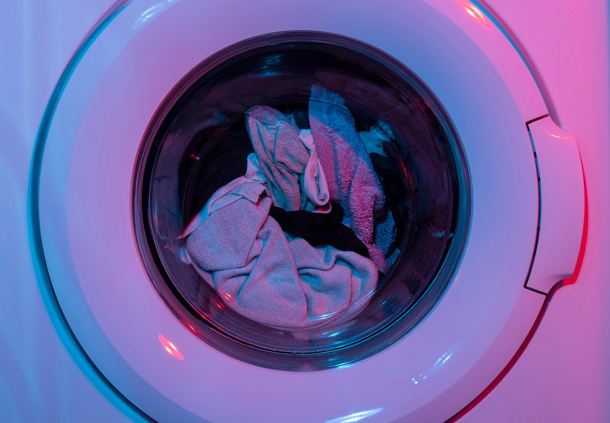

Cách giặt quần áo không bị phai màu: 7 mẹo giữ đồ bền đẹp như mới mua
- Muối ăn hoặc giấm trắng (cho lần giặt đầu của đồ mới)
- Chậu ngâm riêng cho đồ mới và đồ tối màu
- Túi giặt lưới cho đồ mỏng và đồ in hình
Áo thun đen mới mua giặt hai lần đã bạc phếch, quần jean xuống màu nhanh đến tiếc. Thật ra phai màu phần lớn không phải do vải dởm, mà do cách giặt và cách phơi chưa đúng. Dưới đây là cách giặt quần áo không bị phai màu với 7 mẹo đơn giản, từ lần giặt đầu tiên cho tới cách phơi và mẹo riêng cho đồ jean, đồ đen.
1. Vì sao quần áo nhanh phai màu?
Trên đồ mới, một phần thuốc nhuộm chưa bám chặt vào sợi vải nên lần giặt đầu ra màu mạnh nhất — nước giặt chuyển màu là chuyện bình thường, không có nghĩa vải hỏng.
Nước nóng và bột giặt có tính tẩy mạnh làm màu bong nhanh hơn, nhất là với vải cotton nhuộm màu đậm.
Ma sát khi vò mạnh tay hoặc giặt máy chung với đồ cứng (khóa kéo, khuy kim loại) làm mòn bề mặt vải. Nắng gắt lúc phơi cũng làm bạc màu từng mảng, rõ nhất trên đồ tối màu.
Một điểm nữa ít người để ý: chọn được đồ chất lượng tốt ngay từ đầu thì giữ màu cũng dễ hơn nhiều. Nếu hay mua đồ online, bạn nên xem thêm 6 bước mua hàng online tránh hớ giá và lừa đảo để tránh mua phải đồ nhuộm ẩu, giặt một lần đã loang màu.
2. Ngâm đồ mới với nước muối hoặc giấm trong lần giặt đầu
Với đồ mới màu đậm (đen, đỏ, xanh đậm, jean), trước lần giặt đầu hãy ngâm trong nước lạnh pha muối hoặc giấm trắng. Tỷ lệ dễ nhớ: 1–2 thìa canh muối ăn, hoặc khoảng 100 ml giấm trắng, cho 2 lít nước lạnh. Ngâm khoảng 30 phút rồi giặt như bình thường.
Cần nói rõ để bạn không kỳ vọng sai: muối và giấm chỉ hỗ trợ cố định màu ở mức nhất định, giúp lần giặt đầu bớt ra màu hơn — không có chuyện ngâm một lần là giữ màu vĩnh viễn. Giữ màu lâu dài vẫn nhờ cách giặt và phơi đúng ở các mục dưới.
Đồ mới nên giặt riêng 1–2 lần đầu, tuyệt đối không giặt chung với đồ trắng hoặc đồ sáng màu trong những lần này, vì màu ra có thể lem sang đồ khác.

3. Lộn trái và phân loại quần áo trước khi giặt
Lộn trái giúp mặt vải có màu và hình in ít tiếp xúc trực tiếp với ma sát trong lồng giặt, nhờ vậy bền màu và bền hình in hơn rõ rệt.
Phân loại thành 3 nhóm trước khi giặt: đồ trắng, đồ sáng màu và đồ tối màu. Đóng khóa kéo, cài cúc áo trước khi cho vào máy để tránh móc rách và cọ xát vào đồ khác.
Đồ mỏng, đồ len, đồ in hình lớn nên cho vào túi giặt lưới — món rẻ tiền nhưng giảm hẳn bai dão và tróc hình in.
4. Giặt bằng nước lạnh và lượng bột giặt vừa đủ
Với đồ màu, ưu tiên nước lạnh hoặc nước dưới 30°C. Nước nóng chỉ nên dùng cho đồ trắng hoặc đồ cần khử khuẩn đặc biệt, không dùng cho đồ màu đậm.
Bột giặt nhiều không đồng nghĩa sạch hơn. Cho quá liều khiến bột giặt không tan hết, để lại cặn trắng, làm vải cứng và xỉn màu dần. Cứ theo đúng liều lượng trên bao bì là đủ.
Tránh dùng thuốc tẩy (nước Javel) cho đồ màu vì tẩy phá màu ngay lập tức. Nếu có điều kiện, chọn nước giặt dịu nhẹ hoặc loại chuyên cho đồ màu/đồ đen sẽ giữ màu tốt hơn bột giặt tẩy mạnh.
5. Không ngâm đồ màu quá lâu, giặt ngay sau khi mặc
Nhiều người có thói quen ngâm đồ cả buổi hoặc cả ngày trước khi giặt. Với đồ màu, ngâm tối đa chỉ nên 15–30 phút; ngâm lâu trong nước xà phòng làm màu phai đều ra nước và vải yếu đi.
Đồ ướt mồ hôi nên giặt trong ngày: mồ hôi để lâu gây ố vàng vùng nách, cổ áo và phai màu cục bộ, càng để càng khó xử lý.
6. Phơi quần áo đúng cách để không bị bạc màu
Phơi cũng lộn trái như khi giặt, tránh nắng gắt trực diện giờ trưa. Lý tưởng là nơi bóng râm thoáng gió, hoặc nắng nhẹ sáng sớm, chiều muộn.
Giũ phẳng trước khi phơi giúp đồ ít nhăn, khô đều. Đồ khô tới đâu thu vào tới đó, không phơi qua đêm ngoài sương vì sương làm đồ ẩm lại, dễ có mùi và nhanh cũ.
Sau khi thu đồ, nếu tủ quần áo chật chội khiến đồ bị nhồi nhét nhăn nhúm, bạn có thể tham khảo thêm cách sắp xếp tủ quần áo gọn gàng, chứa được nhiều đồ hơn để đồ được treo, gấp thoáng và bền đẹp hơn.
7. Mẹo riêng cho quần jean và đồ đen
Quần jean không cần giặt sau mỗi lần mặc: không dính bẩn rõ ràng thì mặc 3–4 lần giặt một lần, vừa giữ màu vừa giữ form. Khi giặt vẫn lộn trái, có thể thêm 1 thìa giấm vào nước xả cuối để hỗ trợ giữ màu.
Đồ đen tránh vắt xoắn mạnh vì dễ để lại vệt trắng ở nếp gấp, và nên phơi nơi râm hoàn toàn — đồ đen bắt nắng mạnh, bạc màu nhanh hơn các màu khác.
Tóm lại: giữ màu bền lâu dựa vào 3 thói quen cốt lõi — ngâm muối hoặc giấm lần giặt đầu (chỉ hỗ trợ, không thần kỳ), giặt lộn trái bằng nước lạnh với lượng bột giặt vừa đủ, và phơi lộn trái nơi râm mát. Bạn hay dùng mẹo nào để giữ màu đồ? Hãy chia sẻ ở phần bình luận, và gửi bài này cho người thân hay mua đồ tối màu nhé!
Nội dung chỉ mang tính tham khảo. Với các việc liên quan đến điện, gas, hóa chất và sức khỏe, hãy ưu tiên an toàn và hỏi ý kiến chuyên gia khi cần.


💬 Bình luận
Đang tải bình luận…